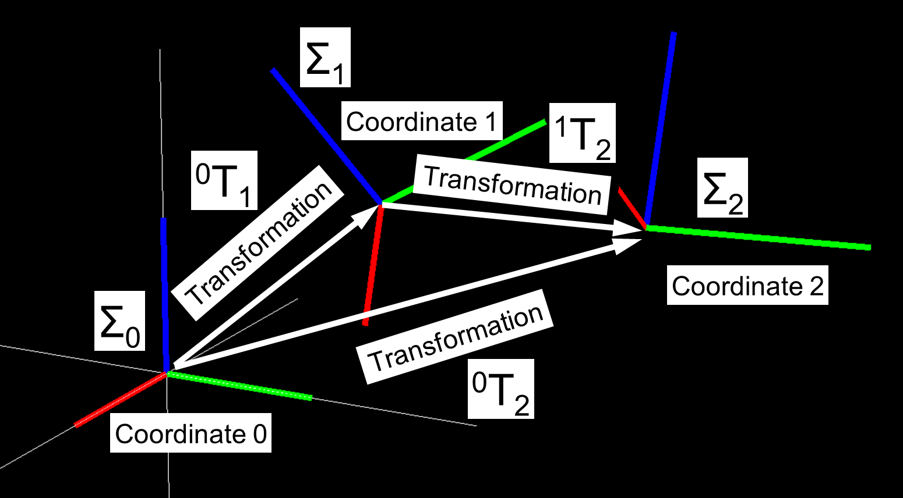
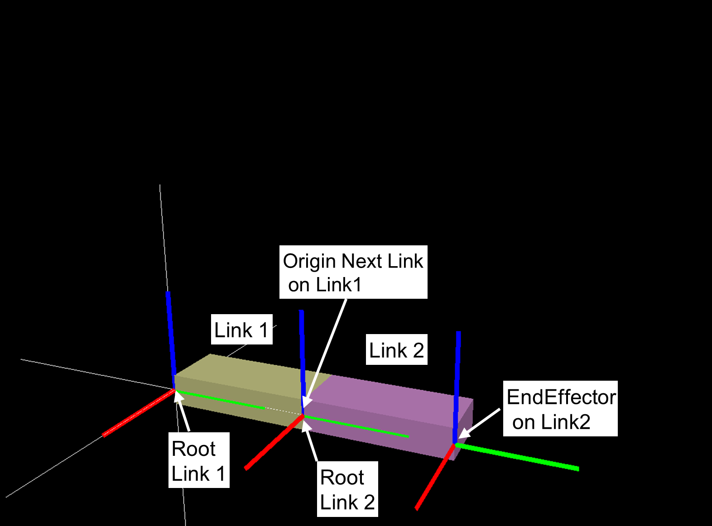
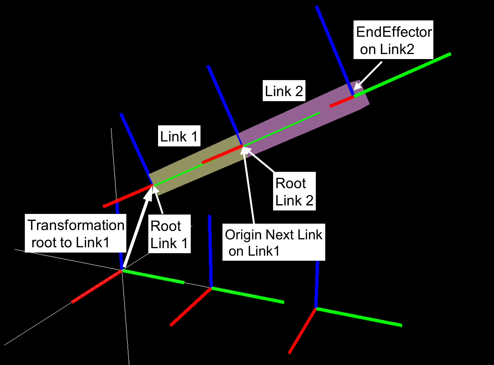
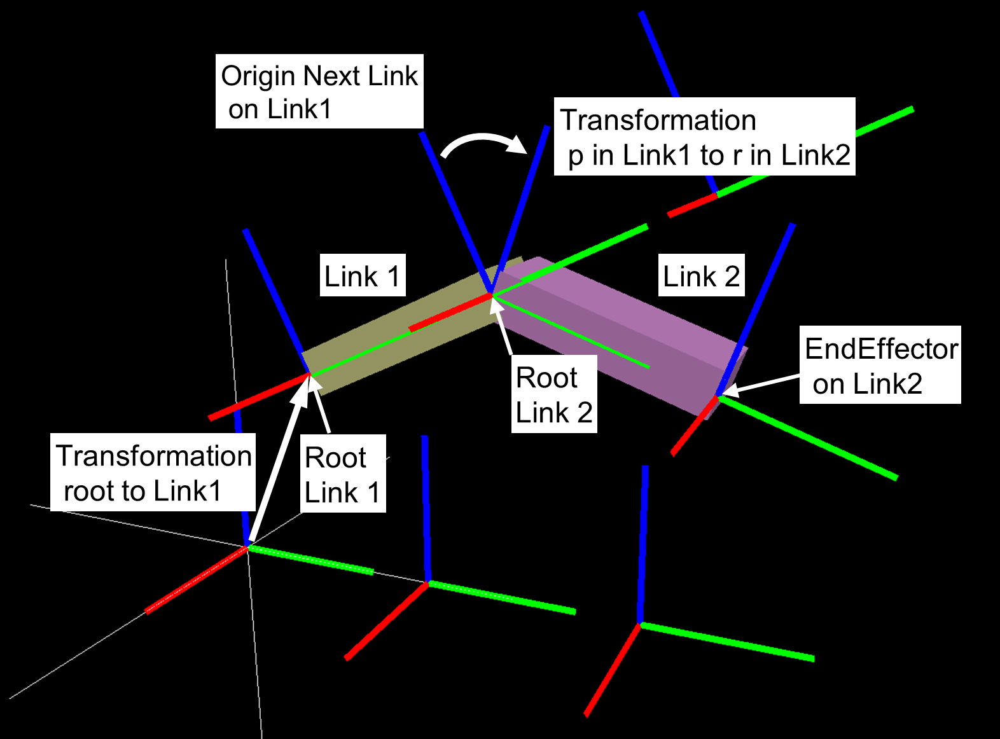

座標
座標変換
3次元座標
The 3D position is a vector of three real numbers, represented using lower-case boldface letters.
The three elements represent positions on the x-, y-, and z-axis, respectively.
It is often denoted as a vertical vector.
3D position \(\mathbf{p}\) is denoted below.
3D Rotation
Rotations in 3D can be represented using a rotation matrix.
The rotation matrix is a 3x3 matrix. It is the x-, y-, and z-axis of the rotated coordinate series aligned in columns, as referenced from the original coordinate system.
Rotation matrix \(\mathbf{R}\) is denoted below.

Rotation matrix is an orthogonal matrix, which means that the transpose and inverse of the matrix are equival
Inverse of a rotation matrix is denoted below.
Other ways to represent 3D rotations are Roll-Pitch-Yaw angle (RPY), Quaternion, AngleAxis, etc.
Although the degree of freedom (DOF) of rotation is 3, a rotation matrix that is easy to use in calculations, and a quaternion that has no singular points and is easy to interpolate are used.
Please refer to the reference book.
AngleAxis representation
Homogeneous transformation matrix
6DOF-Position in 3D can be represented using 3D position and 3D rotation, with 3 DOF for position and 3 DOF for rotation, for a total of 6 DOF.
The homogeneous transformation matrix is used to represent 6DOF-Position in 3D.
The homogeneous transformation matrix T is represented as a 4x4 matrix using a 3D position vector \(\mathbf{p}\) and a 3D rotation matrix \(\mathbf{R}\) as follows.
The inverse matrix of T is as follows.
The multiplication of \(\mathbf{T}_{a}\) and \(\mathbf{T}_{b}\) is as follows.
where \(\mathbf{T}_{a}\) and \(\mathbf{T}_{b}\) are as follows.
System of coordinates
Coordinate system of rigid body link
  座標系と座標クラスの関係
coordinates class (cnoid.IRSLCoords.coordinates) is a class for manipulating homogeneous transformation matrices.
An instance of the coordinates class has 3D position vector \(\mathbf{p}\) and 3D rotation matrix \(\mathbf{R}\) .
Initializing and accessing to a position and a rotation matrix
\(\mathbf{p}\) and \(\mathbf{R}\) can be retrieved by accessing to properties of coordinates class.
In the following, T is an instance of the coordinates class.
Mathmatical representaion of T is following.
>>> p = numpy.array([1, 2, 3])
>>> R = numpy.array([[0, -1, 0],[1, 0, 0], [0, 0, 1]])
>>> T = coordinates(v, R)
>>> T
<coordinates[address] 1 2 3 / 0 0 0.707107 0.707107 >
>>> coordinates(p) ### set pos, rot is Identity
>>> coordinates(R) ### set rot, pos is Zero
>>> coordinates(numpy.array([0, 0, 0, 1])) ### set rot by quaternion
>>> coordinates(v, numpy.array([0, 0, 0, 1])) ### set pos and rot by quaternion
>>> coordinates(numpy.array([[0, -1, 0, 0],[1, 0, 0, 0], [0, 0, 1, 0], [0, 0, 0, 1]]) ### 4x4 homogeneous transformation matrix
Initalizing coordinates
>>> T.pos
array([1., 2., 3.])
Getting and setting 3D position (access attribute pos)
>>> T.rot
array([[ 0., -1., 0.],
[ 1., 0., 0.],
[ 0., 0., 1.]])
Getting and setting Rotation matrix (access attribute rot)
>>> T.quaternion
array([0. , 0. , 0.70710678, 0.70710678])
Getting and setting quaternion (access attribute quaternion)
>>> T.RPY
array([ 0. , -0. , 1.57079633])
Getting and setting roll-pitch-yaw angle (access attribute RPY)
>>> T.angleAxis
array([0. , 0. , 1. , 1.57079633])
Getting and setting angle-axis (access attribute angleAxis)
>>> T.cnoidPosition
array([[ 0., -1., 0., 1.],
[ 1., 0., 0., 2.],
[ 0., 0., 1., 3.],
[ 0., 0., 0., 1.]])
Getting and setting 4x4 homogeneous transformation matrix (access attribute cnoidPosition)
Methods to convert a vector
In the following, \(\mathbf{v}\) is 3D position vector (numpy.array). Folowing 4 functions do not change the input value.
>>> v = numpy.array([0.1, 0.2, 0.3])
>>> T.rotate_vector(v)
array([-0.2, 0.1, 0.3])
Mathmatical representation of a return value is
\(\mathbf{R} \mathbf{v}\)
>>> T.inverse_rotate_vector(v)
Mathmatical representation of a return value is
\(\mathbf{v}^T \mathbf{R}\)
>>> T.transform_vector(v)
Converts a vector represented in a local coordinate system T to a vector represented in the world coordinate system.
Mathmatical representation of a return value is
\(\mathbf{R}\mathbf{v} + \mathbf{p}\)
>>> T.inverse_transform_vector(v)
Converts a vector represented in the world coordinate system. to a vector represented in a local coordinate system T.
Mathmatical representation of a return value is
\(\mathbf{R}^{-1}\left( \mathbf{v} - \mathbf{p} \right)\)
Methods to convert a vector(change input value)
There are functions which change the input value.
Input value v will be changed as the same of return value.
>>> v = numpy.array([0.1, 0.2, 0.3])
>>> T.rotateVector(v)
>>> T.inverseRotateVector(v)
>>> T.transformVector(v)
>>> T.inverseTransformVector(v)
Methods to return a coordinate (without modifying itself)
In the following, A is an instance of the coordinates class.
>>> T.inverse_transformation()
Returns inverse transformation.
Mathmatical representation of a return value is following.
>>> T.transformation(A, wrt)
wrt is an optional value and defult value is 'local'
If wrt = coordinates.wrt.local
\(T^{-1}A\) is returned
If wrt = coordinates.wrt.world
\(AT^{-1}\) is returned
If wrt = W (coordinates class)
\(W^{-1}AT^{-1}W\) is returned
Methods to modify itself
In the following, \(\leftarrow\) represents substitution.
>>> T.newcoords(A)
Attributes pos and rot is substituted
\(T \leftarrow A\)
>>> T.move_to(A, wrt)
If wrt = coordinates.wrt.local
\(T \leftarrow TA\)
If wrt = coordinates.wrt.world
\(T \leftarrow A\)
If wrt = W (coordinates class)
\(T \leftarrow WA\)
>>> T.translate(v, wrt)
If wrt = coordinates.wrt.local
\(\mathbf{p} \leftarrow \mathbf{p} + \mathbf{R}\mathbf{v}\)
If wrt = coordinates.wrt.world
\(\mathbf{p} \leftarrow \mathbf{p}+ \mathbf{v}\)
If wrt = W (coordinates class)
\(\mathbf{p} \leftarrow \mathbf{p} + \mathbf{R}_{W}\mathbf{v}\)
\(\mathbf{R}_{W}\) is rotation matrix of W
>>> T.locate(v, wrt)
If wrt = coordinates.wrt.local
\(\mathbf{p} \leftarrow \mathbf{p} + \mathbf{R} \mathbf{v}\)
If wrt = coordinates.wrt.world
\(\mathbf{p} \leftarrow \mathbf{v}\)
If wrt = W (coordinates class)
\(\mathbf{p} \leftarrow \mathbf{p}_{W} + \mathbf{R}_{W} \mathbf{v}\)
\(\mathbf{R}_{W}\) is rotation matrix of W, and \(\mathbf{p}_{W}\) is 3D position of W.
>>> T.transform(A, wrt)
If wrt = coordinates.wrt.local
\(T \leftarrow TA\)
If wrt = coordinates.wrt.world
\(T \leftarrow AT\)
If wrt = W (coordinates class)
\(T \leftarrow$ $\left( W A W^{-1} \right) T\)
Examples
参考文献
実践ロボット制御 https://www.ohmsha.co.jp/book/9784274224300/
第2章 姿勢の記述 及び 第4章 運動学の一般的表現 の内容が参考になる